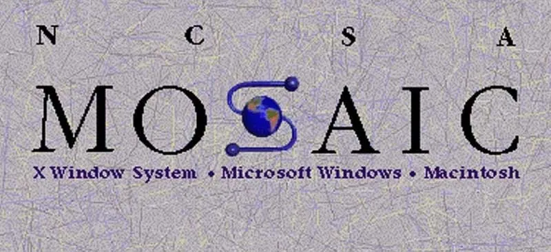

|
Se crea la agencia ARPA (Advanced Research Projects Agency) en
EE.UU., que luego desarrollaría la base de Internet.
|
📧 Ray Tomlinson crea el correo electrónico y usa por primera
vez el símbolo @.

|
Se crea el Sistema de Nombres de Dominio (DNS) (.com, .org,
.edu, etc.).

|
Aparece el navegador Mosaic, que populariza el uso de Internet.

|
Se comercializa Internet a nivel mundial. Nacen empresas como
Amazon y eBay.
|
🔎 Se funda Google..

|